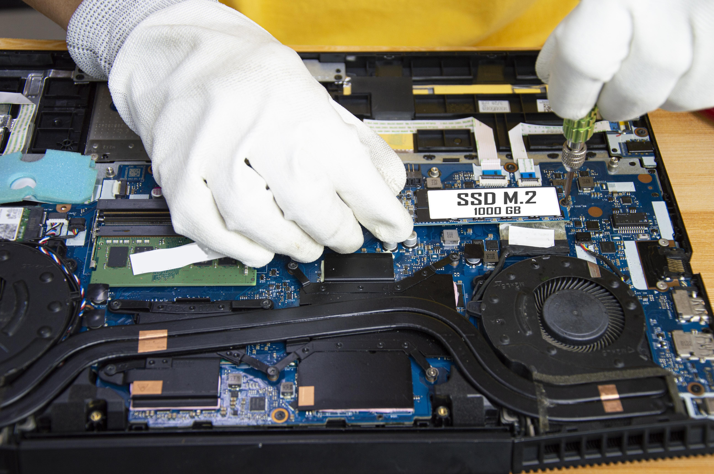

Deleted File Recovery
Exploring recovery options for accidentally deleted documents, photos and other important files.
Preparing your experience...
COMPUTER SERVICE
04 — DATA RECOVERY & RESTORATION
From accidentally deleted files to inaccessible storage devices, we help investigate data loss and identify possible recovery solutions for your important information.

Your Data Matters
WHAT WE DO
Losing important documents, photos or work files can be stressful. Data loss may happen because of accidental deletion, formatting, software errors or storage device failure. We help identify the problem and assess available recovery options.
Exploring recovery options for accidentally deleted documents, photos and other important files.
Checking hard drives, SSDs and external storage devices for possible failures and errors.
Attempting to restore accessible information and transfer recovered files to suitable storage.
COMMON DATA LOSS ISSUES
Data can become inaccessible for different reasons. Here are some common situations where recovery may help.
OUR RECOVERY APPROACH
Successful data recovery starts with understanding what happened. We assess the storage device, investigate the cause of data loss and determine which recovery options are appropriate.
Discuss Your Data LossChecking the condition of your drive and identifying possible causes of data loss.
Evaluating the storage device and determining whether recovery may be possible.
Attempting to recover accessible deleted, formatted or corrupted data.
Transferring successfully recovered files to an appropriate storage device.
WHY NEXORA
We understand how valuable personal and business files can be. Our priority is to assess the situation carefully and explain realistic recovery options.
We inspect the storage device before recommending an appropriate recovery approach.
We understand the importance of handling your personal and business files responsibly.
We explain possible recovery outcomes without promising results that cannot be guaranteed.
We aim to minimize unnecessary operations that could make data loss worse.
GOT QUESTIONS?
Find answers to common questions about deleted files, damaged storage devices and data recovery.
Still have questions? Contact us →Recovery may be possible if the deleted data has not been overwritten. The chances depend on the storage device, file system and time since deletion.
It depends on the type and severity of the damage. Some logical problems may be recoverable, while serious physical failures can require specialized equipment.
Stop using the affected storage device. Avoid saving new files, installing recovery software or formatting the drive, as these actions may overwrite recoverable data.
Recovery may be possible from USB flash drives, memory cards and external storage devices. The result depends on the device's condition and the cause of data loss.
No. Recovery cannot be guaranteed. Success depends on the type of damage, whether data has been overwritten and the condition of the storage device.
YOUR DATA MATTERS
Stop using the affected device and contact us. We'll help assess your data recovery options.
Request Data Recovery